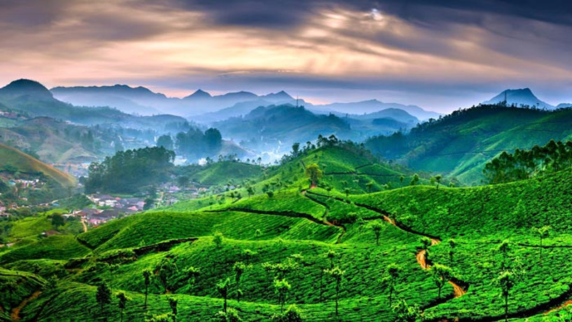
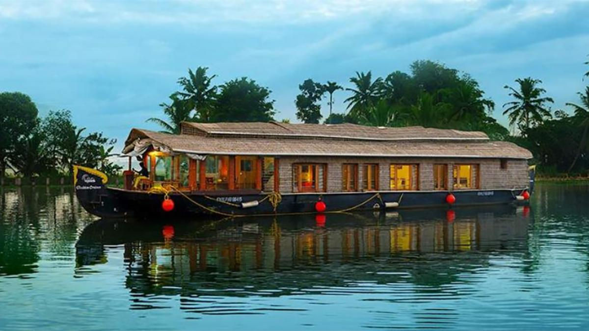

Kerala Tourism Page
Some representative placeholder content for the first slide.

Kerala Tourism Page
Some representative placeholder content for the second slide.

Kerala Tourism Page
Some representative placeholder content for the third slide.